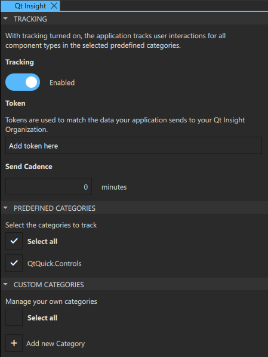

Qt Insight
In the Qt Insight view, you manage your Qt Insight.
Qt Insight is an analytics solution that provides real user insights on the usage of Qt applications. It shows, for example, an application’s performance, usage, and user data.
For more information, see the Getting Started with Qt Insight documentation.

In Qt Design Studio, you can do the following with Qt Insight:
- Turn on and off tracking
- Set send cadence
- Manage categories